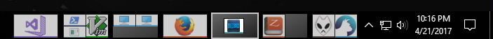
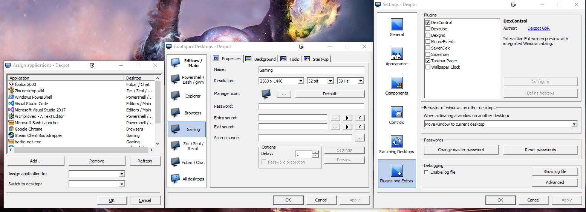

Tool of the Month #2 - Dexpot
Table of Contents
Dexpot
As noted on one of my other posts, I immensely enjoy customizing my work environment. Unfortunately, one of my newfound productivity boosts was switching window managers on Linux, which is not possible on Windows. DexPot, while not a replacement for the tiling window manager i3wm that I was using, has enough features that I don't find myself booting into my Linux install all that often right now.
If you don't know what a tiling window manager is, it basically means that %100 of the screen is utilized at all times without windows overlapping. All major operating systems by default use stacking windows as an approximation of the 'desktop' metaphor.
Windows does have some basic tiling such as snap to left/right side or corners. This is generally enough tiling for my needs, and with some custom keybindings thanks to AutoHotKey, I can keep my hands on the keyboard longer. What has been missing from Windows is virtual desktops. I use many different programs at once, and until Windows 10 there was no official support for virtual desktops, even though competitors have had this ability for a long time.
Virtual desktops are a way of organizing programs and windows into their own space which allows me to keep 'desktop' for a specific purpose. For example, I have one desktop assigned to my music player and chat windows. This way I can keep these programs open and easily accessible without cluttering up my taskbar or having an unreasonable amount of extra monitors.
Some other usefull feartures are smaller, such as the ability to have discrete icons per desktop (I rarely if ever use icons on the desktop), or having unique wallpapers for each desktop. It is also possible to set windows to be transparent, which can be useful in certain situations, though that is also supposed to be a feature of the upcoming Windows 10 Neon. There are so many different ways to customize Dexpot that I haven't even scratched the surface.
Install is fairly simple, but setup and fine tuning can be quite a process depending on how customized you want to get.
 